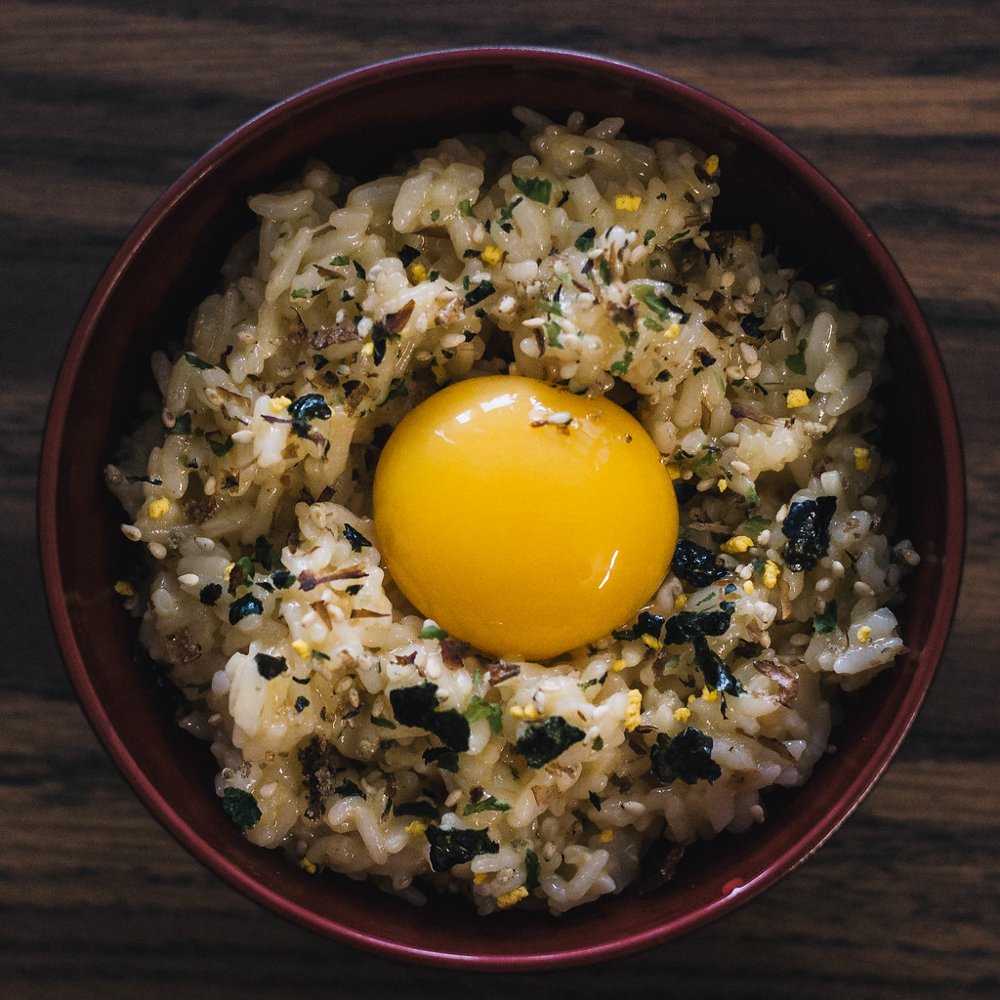

Tamago Kake Gohan

Description
A wonderfully simple yet delicious Japanese dish.
This recipe will create two servings.
Ingredients
- 2 - High quality eggs
- 1 - Cup of short grain rice
- 1 - Cup of water
- 1 - Stalk of green onion
- 2 - Table spoons of dark soy sauce
- 2 - Table spoons of furikake (optional)
Directions
- Wash rice until water runs clear
- Add rice to the cooking method of choice alongside
1 cup of water. A rice cooker is recommended.
- Slice the green onion as thinly as possible
- After the rice is prepared, split into two bowls
- Crack the egg over the rice and add the soy sauce to each bowl
- Mix vigorously.
- Sprinkle the sliced green onion over top as well as the furikake if desired.
- Enjoy!